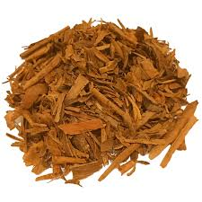
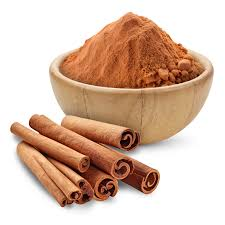

Grades of True Cinnamon - Cinnamomum verum (also known as Cinnamomum zeylanicum)

Bulk supply • EU export • COA available • Certificate available
Alba

Grade: Alba
Diameter: ≤ 6 mm
Best Use:
Premium retail packaging, gourmet products, high-end foodservice
Buyer Value:
Top-tier Ceylon cinnamon with the finest appearance and highest uniformity. Ideal for brands targeting premium positioning and visually perfect quills.
Continental (C5-Special, C5, C4)

Grades: C5-Special, C5, C4
Diameter: C5-Special: 6-8 mm, C5: 8-10 mm, C4: 10-16 mm
Best Use:
Retail packaging, spice blends, food manufacturing, export markets
Buyer Value:
Best balance of quality, price, and availability. The most demanded export grade for consistent supply and reliable commercial performance.
Mexican (M5, M4)

Grades: M5, M4
Diameter: M5: 16-18 mm, M4: 18-20 mm
Best Use:
Food manufacturing, industrial use, essential oil extraction. Bulk trade, food processing, grinding
Buyer Value:
Cost-efficient solution for industrial buyers. Maintains strong aroma while optimizing price for high-volume operations.
Hamburg (H1, H2, H3)

Grades: H1, H2, H3
Diameter: H1: 20-25 mm, H2: 25-30 mm, H3: >30 mm
Best Use:
Industrial applications, essential oil extraction, bulk grinding. Grinding, powder production, oil extraction
Buyer Value:
Ideal for large-scale industrial applications where cost-effectiveness and consistent quality are prioritized. Designed for processing industries. Not focused on appearance, but highly efficient as raw material for further production.
Quillings

Grade: Quillings
Size: < 6 mm
Best Use:
Food manufacturing, spice blends, tea production, retail supply. Powder production, extraction, tea blends
Buyer Value:
High-value industrial input with strong aroma. Ideal for buyers focused on processing efficiency and cost optimization.
Versatile grade for various applications. Provides the authentic Ceylon cinnamon flavor and aroma in a more economical form. Suitable for food manufacturers, spice blenders, and tea producers looking for a reliable supply of cinnamon pieces that can be further processed into powder or used in blends.
Powder

Grade: Powder
Best Use:
Food manufacturing, seasoning blends, bakery products, retail supply. Culinary use, food processing, retail packaging, spice blends
Buyer Value:
Finely ground Ceylon cinnamon powder with consistent quality and strong aroma. Suitable for a wide range of applications from food manufacturing to retail supply. Provides the authentic flavor and aroma of Ceylon cinnamon in a convenient powdered form, ideal for culinary use, food processing, and spice blends.
AromaSweet, delicate, and highly aromaticMesh Size 60 - 100 Mesh (customizable upon request).